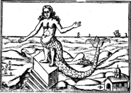
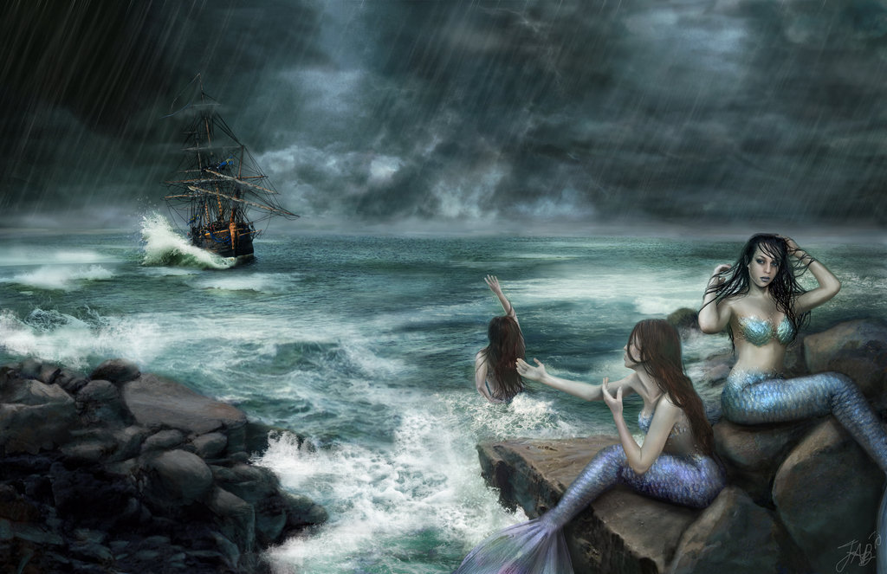
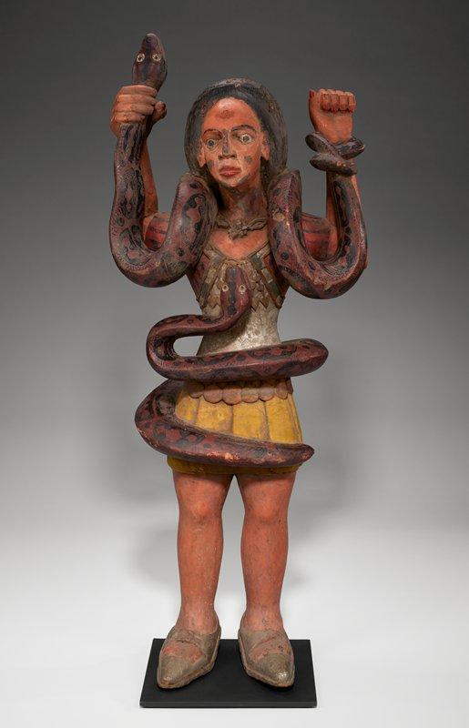
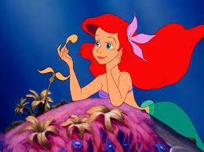
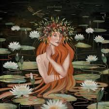

Mermaids Across Cultures
Legends of mermaids have spanned cultures across the globe for thousands of years. Explore some of the most notable mermaid legends here:
Cultures Discussed
- Assyrian
- Greek
- Central / Southern African
- German
- Eastern European
- Irish
Mermaid Myths Across Cultures
| Legend | Illustration |
|---|---|
| Atargatis - The First Mermaid (Assyrian) Atargatis is considered the first known mermaid in mythology. She was a goddess who transformed herself into a mermaid out of shame for accidentally killing her human lover. |
 |
| Sirens (Greek) The Sirens were dangerous creatures in Greek mythology who lured sailors to their doom with their enchanting voices and music. |
 |
| Mami Wata Waterspirits (Central / Southern Africa) Mami Wata are water spirits revered in many African cultures. They are often depicted as mermaid-like figures and are associated with fertility, healing, and protection. |
 |
| "The Little Mermaid" (German) The Little Mermaid is a popular fairy tale by Hans Christian Andersen. The story tells of a young mermaid's love and sacrifice for a human prince. |
 |
| Rusalki (Eastern Europe) Rusalki are water nymphs in Slavic mythology. They are often portrayed as the spirits of young women who died tragically and are associated with rivers and lakes. |
 |
| Merrows (Irish) Merrows are the mermaids of Irish folklore. They are said to be beautiful and kind, and often marry human men. |